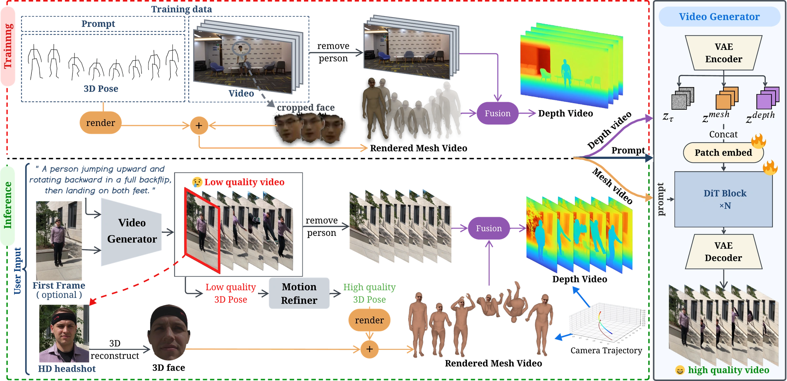

Refining a Video Model's Own Motion for Coherent Human Video Generation
* Work done during internship at SJTU. † Corresponding author.
Human motion video generation
Prompt The person is performing a sequence of Wushu movements, initially standing upright before transitioning into a stance with arms outstretched, pivoting, and executing a low leg sweep, then crouching.
Ours
Base models
Human Motion Video Generators
Motion-Conditioned Video Generator
Camera-controlled video generation
Prompt The person is demonstrating a Muay Thai Hop, a movement used in Muay Thai boxing to maintain rhythm and readiness. Starting in a fighting stance, the individual shifts weight between feet, bouncing lightly and alternating the lift of the heels while maintaining guard position with the hands.
Ours
Baselines
From coarse motion to coherent video
ReMoVe treats the base generator's coarse output as a motion hypothesis rather than a final result. It recovers and refines the underlying motion, renders aligned mesh and depth conditions under a shared camera trajectory, and uses these explicit signals to guide the final video generation.
Prompt A person stepping one foot forward into a deep lunge, bending both knees, then pushing back to a standing position and repeating.
Mesh makes the human structure explicit. Depth anchors the person to the surrounding scene and camera. Together, they turn motion and geometry into aligned signals that the video generator can follow.
Training
Rendered mesh
Each training clip is paired with temporally and spatially aligned SMPL-X motion parameters and camera parameters. We rasterize the posed mesh in the corresponding camera view to obtain the rendered mesh conditioning video. The facial region directly preserves the subject's appearance, while the remaining body is rendered with a single flat skin color and surface-normal-based Lambertian shading, so that body shape and pose are conveyed primarily through silhouette and geometric shading without introducing specific clothing or texture patterns.
Depth
We remove the person from the training video using a foreground mask and stack the remaining frames with person pixels marked invalid. A per-pixel temporal median recovers background pixels observed elsewhere in the clip, while pixels never observed are spatially inpainted. A metric depth estimator then produces the background depth. In parallel, the posed mesh is rasterized to obtain the person's geometric depth, and the two are aligned and fused to form the final depth conditioning video.
Inference
Rendered mesh
At inference time, we first recover and refine the motion from the base generator's coarse video. Given the refined motion and the target camera trajectory, we pose an SMPL-X mesh for each frame and render it under the target viewpoint, following the same face-region and shaded-body representation used during training. Because the coarse video cannot provide temporally consistent facial observations, we reconstruct a static FLAME texture atlas from a reference portrait of the target identity. Facial pixels are then associated with the aligned FLAME surface, while the body is rendered with a flat skin tone and surface-normal-based shading, with a soft boundary between the two.
Depth
We follow the same procedure as the training-time construction to remove the person from the coarse video, reconstruct the background by temporal median, and estimate its metric depth. When a target camera trajectory is specified, the background depth is unprojected into a point cloud, transformed according to the trajectory, and rendered from the target viewpoint. Disocclusion holes are filled through depth-domain inpainting, while the person depth is obtained by rasterizing the refined mesh from the same viewpoint. The two depth fields are aligned with a shared per-clip scale factor and fused into the final depth conditioning sequence.

Main quantitative results
Quantitative comparison on VBench, the Human Anatomy dimension of VBench-2.0, video-level distribution metrics, and reconstruction fidelity under ground-truth motion.
| Method | VBench / VBench-2.0 | Distribution | Reconstruction | ||||||||||
|---|---|---|---|---|---|---|---|---|---|---|---|---|---|
| SC | MS | DD | IQ | BC | AQ | TF | HA | FVD-16 ↓ | FID-VID ↓ | SSIM ↑ | LPIPS ↓ | PSNR ↑ | |
| Base video generators | |||||||||||||
| Wan-TI2V-5B | 91.05 | 98.87 | 66.45 | 67.39 | 92.42 | 49.89 | 97.28 | 90.88 | 91.41 | 38.47 | — | — | — |
| CogVideoX-1.5-I2V-5B | 92.05 | 98.78 | 9.87 | 65.82 | 93.48 | 47.40 | 97.70 | 75.49 | 75.29 | 30.05 | — | — | — |
| CoMoVi (Wan-5B) | 88.08 | 96.91 | 76.97 | 61.57 | 90.44 | 46.40 | 94.77 | 76.17 | 96.41 | 44.57 | — | — | — |
| ReMoVe conditions | |||||||||||||
| Ours (mesh) | 92.21 | 99.30 | 50.66 | 68.82 | 93.88 | 49.47 | 98.80 | 91.54 | 63.28 | 30.69 | — | — | — |
| Ours (depth) | 93.17 | 99.48 | 42.11 | 69.07 | 94.60 | 49.36 | 99.25 | 91.87 | 70.97 | 34.24 | — | — | — |
| Ours (mesh + depth) | 93.26 | 99.50 | 40.79 | 68.46 | 94.48 | 50.02 | 99.27 | 92.66 | 69.87 | 33.00 | — | — | — |
| Ground-truth motion | |||||||||||||
| EchoMotion (GT-motion) | 85.47 | 94.60 | 96.05 | 53.41 | 91.12 | 42.17 | 93.02 | 76.50 | 445.18 | 219.12 | — | — | — |
| MTVCrafter (GT-motion) | 96.81 | 99.71 | 0.0 | 70.12 | 97.39 | 44.93 | 99.80 | 94.85 | 83.27 | 47.28 | 0.7638 | 0.1697 | 19.483 |
| Ours (mesh + depth, GT-motion) | 94.08 | 99.41 | 11.18 | 68.81 | 94.75 | 49.05 | 99.20 | 90.50 | 27.71 | 16.27 | 0.7984 | 0.1214 | 22.447 |
Best and second-best values are highlighted within the corresponding comparison groups. Arrows indicate whether higher or lower values are preferred.